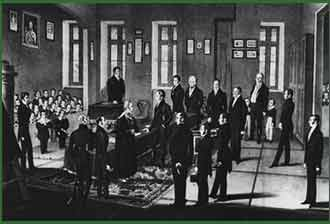

The Jewish Primär School in Pozsony (Pressburg, Bratislava) was founded in 1820. The crown prince, Ferdinand, visited the school in 1830. This modern institution in Pozsony served as a model for Jewish schools founded in other towns.
|  | |||
|
Copperplate by Julius Weissenberg The Jewish Primär School in Pozsony (Pressburg, Bratislava) was founded in 1820. The crown prince, Ferdinand, visited the school in 1830. This modern institution in Pozsony served as a model for Jewish schools founded in other towns. |
|||